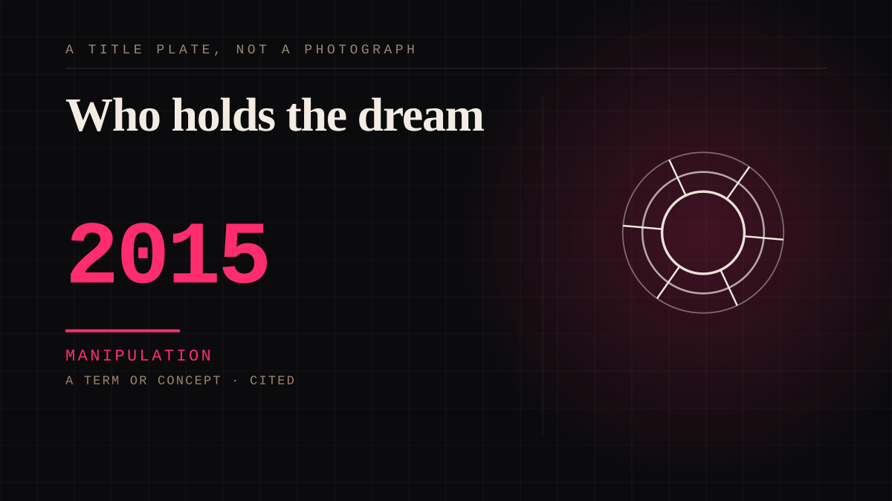

A term or concept · 2015 · Criticism
Who holds the dream
The standing question on this site. Whenever thousands of people dream together, check who owns the building they are dreaming in, what it charges, and whether you can leave with your things.

Not an academic term, it is a test, and it is the most useful thing the field never formalised. The feeling is the same whether the other end is a person, a corporation or a platform. Ownership is the only variable that changes the ethics, and it is invisible from inside the feeling.
Manipulation. One-sided attachment engineered for somebody else's benefit. Paid intimacy, parasocial persuasion, sasaeng, grief extraction, the streak. The lane that pays the bills and the lane that causes the most harm, frequently at the same time.
Consideration. The part where somebody stops and thinks. The research, the diagnosis, the ethics, the lawsuits, the regulators. Roughly fifty years of arguing with itself about whether this is a relationship.
Where it sits
2010 2010+ · 2015 2026
Connected · 3 out, 3 in
It sits in
The full timeline → · The database → · See it in the atlas →